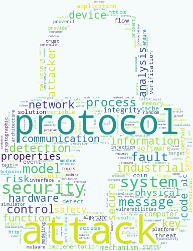
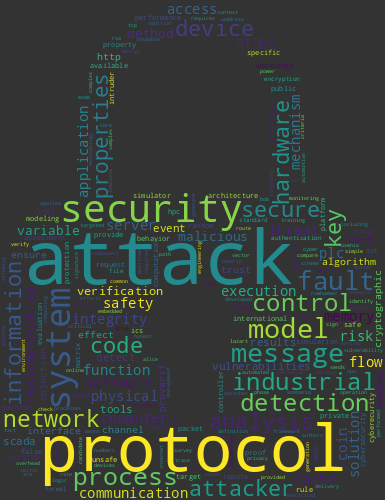

Me
Maxime Puys
Ph.D. in Computer Science Security
Maître de conférences / Associate Professor
Maxime Puys
Ph.D. in Computer Science Security
Maître de conférences / Associate Professor
| [2] |
M. Puys. Sécurité des systèmes industriels : filtrage applicatif et recherche de scénarios d'attaques. Ph.D. Thesis, Communauté Université Grenoble-Alpes, Feb. 2018. [pdf] [slides] [bib]@phdthesis{phdThesisMaximePuys,
author = {Puys, Maxime},
title = {Sécurité des systèmes industriels : filtrage applicatif et recherche de scénarios d'attaques},
school = {Communauté Université Grenoble-Alpes},
year = {2018},
month = {Feb.},
url = {https://theses.hal.science/tel-01893142},
slides = {https://maxime.puys.name/pdf/publications/phdThesis/slidesPhdThesisMaximePuys.pdf},
}
|
| [1] |
M. Puys. Sécurité des cartes à puce, simulation d'attaques par fautes et analyses statiques. Master's Thesis, Communauté Université Grenoble-Alpes, Confidential industry, Jul. 2014. [bib]@mastersthesis{masterThesisMaximePuys,
author = {Puys, Maxime},
title = {Sécurité des cartes à puce, simulation d'attaques par fautes et analyses statiques},
school = {Communauté Université Grenoble-Alpes},
year = {2014},
month = {Jul.},
note = {Confidential industry},
}
|
| [6] |
M. Da Silva, S. Mocanu, M. Puys, and P.-H. Thevenon. Safety-Security Convergence: Automation of IEC 62443-3-2. Computers & Security, Elsevier, vol. 156, pp. 104477, (Rank Sciamago Q1), 2025. [pdf] [bib]@article{DaSilva2025,
author = {Da Silva, Mike and Mocanu, Stéphane and Puys, Maxime and Thevenon, Pierre-Henri},
title = {Safety-Security Convergence: Automation of IEC 62443-3-2},
journal = {Computers \& Security, Elsevier},
volume = {156},
pages = {104477},
year = {2025},
url = {https://hal.science/hal-05032416v1},
rank = {Q1},
ranking = {Sciamago},
}
|
| [5] |
M. Puys, P.-H. Thevenon, S. M. Mocanu, M. Gallissot, and C. Sivelle. SCADA Cybersecurity Awareness and Teaching with Hardware-In-The-Loop Platforms. Journal of Wireless Mobile Networks, Ubiquitous Computing, and Dependable Applications (JoWUA), vol. 13, no. 1, pp. 4-32, (Rank Sciamago Q2), 2022. [pdf] [bib]@article{Puys2022a,
author = {Puys, Maxime and Thevenon, Pierre-Henri and Mocanu, Stéphane Mocanu and Gallissot, Mathieu and Sivelle, Camille},
title = {{SCADA} Cybersecurity Awareness and Teaching with Hardware-In-The-Loop Platforms},
journal = {Journal of Wireless Mobile Networks, Ubiquitous Computing, and Dependable Applications (JoWUA)},
volume = {13},
number = {1},
pages = {4-32},
year = {2022},
url = {https://hal.science/hal-03636896v1},
rank = {Q2},
ranking = {Sciamago},
}
|
| [4] |
P.-H. Thevenon, S. Riou, D.-M. Tran, M. Puys, N. F. Polychronou, M. El Majihi, and C. Sivelle. iMRC: Integrated Monitoring & Recovery Component, a Solution to Guarantee the Security of Embedded Systems. Journal of Internet Services and Information Security (JISIS), vol. 13, no. 1, pp. 4-32, (Rank Sciamago Q3), 2022. [pdf] [bib]@article{Thevenon2022,
author = {Thevenon, Pierre-Henri and Riou, Sebastien and Tran, Duc-Minh and Puys, Maxime and Polychronou, Nikolaos Foivos and El Majihi, Mustapha and Sivelle, Camille},
title = {{iMRC:} Integrated Monitoring \& Recovery Component, a Solution to Guarantee the Security of Embedded Systems},
journal = {Journal of Internet Services and Information Security (JISIS)},
volume = {13},
number = {1},
pages = {4-32},
year = {2022},
url = {https://hal.science/cea-04072866v1},
rank = {Q3},
ranking = {Sciamago},
}
|
| [3] |
N.-F. Polychronou, P.-H. Thevenon, M. Puys, and V. Beroulle. A Comprehensive Survey of Attacks without Physical Access Targeting Hardware Vulnerabilities in IoT/IIoT Devices, and Their Detection Mechanisms. ACM Transactions on Design Automation of Electronic Systems, vol. 27, no. 1, pp. 1-35, (Rank Sciamago Q2), 2021. [pdf] [bib]@article{Polychronou2021a,
author = {Polychronou, Nikolaos-Foivos and Thevenon, Pierre-Henri and Puys, Maxime and Beroulle, Vincent},
title = {A Comprehensive Survey of Attacks without Physical Access Targeting Hardware Vulnerabilities in {IoT/IIoT} Devices, and Their Detection Mechanisms},
journal = {ACM Transactions on Design Automation of Electronic Systems},
volume = {27},
number = {1},
pages = {1-35},
year = {2021},
url = {https://hal.science/hal-03600586v1},
rank = {Q2},
ranking = {Sciamago},
}
|
| [2] |
J. Dreier, M. Puys, M.-L. Potet, P. Lafourcade, and J.-L. Roch. Formally and practically verifying flow properties in industrial systems. Computers & Security, Elsevier, vol. 86, no. 1, pp. 453-470, (Rank Sciamago Q1), 2019. [pdf] [bib]@article{Dreier2019,
author = {Dreier, Jannik and Puys, Maxime and Potet, Marie-Laure and Lafourcade, Pascal and Roch, Jean-Louis},
title = {Formally and practically verifying flow properties in industrial systems},
journal = {Computers \& Security, Elsevier},
volume = {86},
number = {1},
pages = {453-470},
year = {2019},
url = {https://hal.science/hal-01959766v2},
rank = {Q1},
ranking = {Sciamago},
}
|
| [1] |
J.-G. Dumas, P. Lafourcade, J.-B. Orfila, and M. Puys. Dual protocols for private multi-party matrix multiplication and trust computations. Computers & Security, Elsevier, vol. 71, no. 1, pp. 51-70, (Rank Sciamago Q1), 2017. [pdf] [bib]@article{Dumas2017,
author = {Dumas, Jean-Guillaume and Lafourcade, Pascal and Orfila, Jean-Baptiste and Puys, Maxime},
title = {Dual protocols for private multi-party matrix multiplication and trust computations},
journal = {Computers \& Security, Elsevier},
volume = {71},
number = {1},
pages = {51-70},
year = {2017},
url = {https://hal.science/hal-01497866v1},
rank = {Q1},
ranking = {Sciamago},
}
|
| [26] |
D. Miyahara, P. Lafourcade, and M. Puys. Card-Based ZKP Protocols for Connectivity-Based Puzzles: Extending to Tree Structures with Application to Nurimeizu. 13th International Conference on Fun with Algorithms ({FUN} 2026), Porquerolles, France, 2026. [pdf] [bib]@inproceedings{Miyahara26,
author = {Daiki Miyahara and Pascal Lafourcade and Maxime Puys},
title = {Card-Based {ZKP} Protocols for Connectivity-Based Puzzles: Extending to Tree Structures with Application to Nurimeizu},
booktitle = {13th International Conference on Fun with Algorithms ({FUN} 2026)},
year = {2026},
address = {Porquerolles, France},
url = {https://hal.science/hal-05654681v1},
}
|
| [25] |
A. Ben Hassen, P. Lafourcade, D. Mahmoud, and M. Puys. Formal Analysis of SDNsec: Attacks and Corrections for Payload, Route Integrity and Accountability. 20th ACM ASIA Conference on Computer and Communications Security (ACM ASIACCS 2025, Rank Core A), Hanoi, Vietnam, 2025. [pdf] [bib]@inproceedings{BenHassen2025,
author = {Ben Hassen, Ayoub and Lafourcade, Pascal and Mahmoud, Dhekra and Puys, Maxime},
title = {Formal Analysis of SDNsec: Attacks and Corrections for Payload, Route Integrity and Accountability},
booktitle = {20th ACM ASIA Conference on Computer and Communications Security (ACM ASIACCS 2025)},
year = {2025},
address = {Hanoi, Vietnam},
url = {https://hal.science/hal-04998270v1},
rank = {A},
ranking = {Core},
}
|
| [24] |
F. Duręcu, M. Puys, G. Chalhoub, and P.-M. Grollemund. Evaluation of Machine Learning Intrusion Detection Systems Resiliency to Network Traffic Evolution. 33rd International Conference on Software, Telecommunications, and Computer Networks (SoftCOM 2025, Rank Core B), Split, Croatia, 2025. [pdf] [bib]@inproceedings{Durecu2025,
author = {Duręcu, Florent and Puys, Maxime and Chalhoub, Gérard and Grollemund, Paul-Marie},
title = {Evaluation of Machine Learning Intrusion Detection Systems Resiliency to Network Traffic Evolution},
booktitle = {33rd International Conference on Software, Telecommunications, and Computer Networks (SoftCOM 2025)},
year = {2025},
address = {Split, Croatia},
url = {https://hal.science/hal-05191179v1},
rank = {B},
ranking = {Core},
}
|
| [23] |
L. Arnoud, Z. Lagache, P.-H. Thevenon, A. Champenois, V. Breux, M. Puys, E. Gaussier, and O.-E.-K. Aktouf. HENDRICS: A Hardware-in-the-Loop Testbed for Enhanced Intrusion Detection, Response and Recovery of Industrial Control Systems. 30th European Symposium on Research in Computer Security (ESORICS 2025) - Workshop on Assessment with New methodologies, Unified Benchmarks, and environments, of Intrusion detection and response Systems (ANUBIS 2025), Toulouse, France, 2025. [pdf] [bib]@inproceedings{Arnoud2025,
author = {Arnoud, Lalie and Lagache, Zoé and Thevenon, Pierre-Henri and Champenois, Aloïs and Breux, Victor and Puys, Maxime and Gaussier, Eric and Aktouf, {Oum-El-Kheir}},
title = {HENDRICS: A Hardware-in-the-Loop Testbed for Enhanced Intrusion Detection, Response and Recovery of Industrial Control Systems},
booktitle = {30th European Symposium on Research in Computer Security (ESORICS 2025) - Workshop on Assessment with New methodologies, Unified Benchmarks, and environments, of Intrusion detection and response Systems (ANUBIS 2025)},
year = {2025},
address = {Toulouse, France},
url = {https://hal.science/hal-05325191v1},
}
|
| [22] |
Z. Lagache, P.-H. Thevenon, M. Puys, and O.-E.-K. Aktouf. Dissecting Mirai: Spatio-Sequential Analysis and Restoration Strategies using MITRE ATT&CK and D3FEND. 30th Nordic Conference on Secure IT Systems (NordSec 2025, Rank ERA C), Tartu, Estonia, 2025. [pdf] [bib]@inproceedings{Lagache2025,
author = {Lagache, Zoé and Thevenon, Pierre-Henri and Puys, Maxime and Aktouf, {Oum-El-Kheir}},
title = {Dissecting Mirai: Spatio-Sequential Analysis and Restoration Strategies using MITRE ATT&CK and D3FEND},
booktitle = {30th Nordic Conference on Secure IT Systems (NordSec 2025)},
year = {2025},
address = {Tartu, Estonia},
url = {https://hal.science/hal-05325504v1},
rank = {C},
ranking = {ERA},
}
|
| [21] |
S. Kaneko, P. Lafourcade, L.-B. Mallordy, D. Miyahara, M. Puys, and K. Sakiyama. Balance-Based ZKP Protocols for Pencil-and-Paper Puzzles. 27th Information Security Conference (ISC 2024), Washington DC, United States, 2024. [pdf] [bib]@inproceedings{Kaneko2024a,
author = {Kaneko, Shohei and Lafourcade, Pascal and Mallordy, Lola-Baie and Miyahara, Daiki and Puys, Maxime and Sakiyama, Kazuo},
title = {Balance-Based ZKP Protocols for Pencil-and-Paper Puzzles},
booktitle = {27th Information Security Conference (ISC 2024)},
year = {2024},
address = {Washington DC, United States},
url = {https://hal.science/hal-04671562v2},
}
|
| [20] |
S. Kaneko, P. Lafourcade, L.-B. Mallordy, D. Miyahara, M. Puys, and K. Sakiyama. Secure Voting Protocol Using Balance Scale. 17th International Symposium on Foundations and Practice of Security (FPS 2024), Montreal, Canada, 2024. [pdf] [bib]@inproceedings{Kaneko2024b,
author = {Kaneko, Shohei and Lafourcade, Pascal and Mallordy, Lola-Baie and Miyahara, Daiki and Puys, Maxime and Sakiyama, Kazuo},
title = {Secure Voting Protocol Using Balance Scale},
booktitle = {17th International Symposium on Foundations and Practice of Security (FPS 2024)},
year = {2024},
address = {Montreal, Canada},
url = {https://hal.science/hal-04831163v1},
}
|
| [19] |
N. F. Polychronou, P.-H. Thevenon, M. Puys, and V. Beroulle. A Hybrid Solution for Constraint Devices to Detect Microarchitectural Attacks. 8th IEEE European Symposium on Security and Privacy (EuroS&P 2023) - Workshop on Security of Software/Hardware Interfaces (SILM 2023), Delft, Netherlands, 2023. [pdf] [bib]@inproceedings{Polychronou2023,
author = {Polychronou, Nikolaos Foivos and Thevenon, Pierre-Henri and Puys, Maxime and Beroulle, Vincent},
title = {A Hybrid Solution for Constraint Devices to Detect Microarchitectural Attacks},
booktitle = {8th IEEE European Symposium on Security and Privacy (EuroS\&P 2023) - Workshop on Security of Software/Hardware Interfaces (SILM 2023)},
year = {2023},
address = {Delft, Netherlands},
url = {https://hal.science/hal-04149021v1},
}
|
| [18] |
M. Da Silva, M. Puys, P.-H. Thevenon, S. Mocanu, and N. Nkawa. Automated ICS template for STRIDE Microsoft Threat Modeling Tool. 18th International Conference on Availability, Reliability and Security ({ARES} 2023) - Workshop on Cybersecurity in Industry 4.0 ({SecIndustry} 2023), Benevento, Italy, 2023. [pdf] [bib]@inproceedings{DaSilva2023a,
author = {Da Silva, Mike and Puys, Maxime and Thevenon, Pierre-Henri and Mocanu, Stéphane and Nkawa, Nelson},
title = {Automated ICS template for STRIDE Microsoft Threat Modeling Tool},
booktitle = {18th International Conference on Availability, Reliability and Security ({ARES} 2023) - Workshop on Cybersecurity in Industry 4.0 ({SecIndustry} 2023)},
year = {2023},
address = {Benevento, Italy},
url = {https://hal.science/hal-04165419v1},
}
|
| [17] |
M. Da Silva, M. Puys, P.-H. Thevenon, and S. Mocanu. PLC Logic-Based Cybersecurity Risks Identification for ICS. 18th International Conference on Availability, Reliability and Security ({ARES} 2023) - Workshop on Cybersecurity in Industry 4.0 ({SecIndustry} 2023), Benevento, Italy, 2023. [pdf] [bib]@inproceedings{DaSilva2023b,
author = {Da Silva, Mike and Puys, Maxime and Thevenon, Pierre-Henri and Mocanu, Stéphane},
title = {PLC Logic-Based Cybersecurity Risks Identification for ICS},
booktitle = {18th International Conference on Availability, Reliability and Security ({ARES} 2023) - Workshop on Cybersecurity in Industry 4.0 ({SecIndustry} 2023)},
year = {2023},
address = {Benevento, Italy},
url = {https://hal.science/hal-04165414v1},
}
|
| [16] |
C. Sivelle, L. Debbah, M. Puys, P. Lafourcade, and T. Franco-Rondisson. Automatic Implementations Synthesis of Secure Protocols and Attacks from Abstract Models. 27th Nordic Conference on Secure IT Systems (NordSec 2022, Rank ERA C), Reykjavik, Iceland, 2022. [pdf] [bib]@inproceedings{Sivelle2022,
author = {Sivelle, Camille and Debbah, Lorys and Puys, Maxime and Lafourcade, Pascal and Franco-Rondisson, Thibault},
title = {Automatic Implementations Synthesis of Secure Protocols and Attacks from Abstract Models},
booktitle = {27th Nordic Conference on Secure IT Systems (NordSec 2022)},
year = {2022},
address = {Reykjavik, Iceland},
url = {https://hal.science/hal-03835049v1},
rank = {C},
ranking = {ERA},
}
|
| [15] |
M. Puys, P.-H. Thevenon, and S. Mocanu. Hardware-In-The-Loop Labs for SCADA Cybersecurity Awareness and Training. 16th International Conference on Availability, Reliability and Security ({ARES 2021}) - Workshop on Education, Training and Awareness in Cybersecurity ({ETACS} 2021), Vienna, Austria, 2021. [pdf] [bib]@inproceedings{Puys2021,
author = {Puys, Maxime and Thevenon, Pierre-Henri and Mocanu, St\'{e}phane},
title = {Hardware-In-The-Loop Labs for SCADA Cybersecurity Awareness and Training},
booktitle = {16th International Conference on Availability, Reliability and Security ({ARES 2021}) - Workshop on Education, Training and Awareness in Cybersecurity ({ETACS} 2021)},
pages = {1--10},
year = {2021},
address = {Vienna, Austria},
url = {https://hal.science/hal-03282601v1},
}
|
| [14] |
N. F. Polychronou, P.-H. Thevenon, M. Puys, and V. Beroulle. MaDMAN: Detection of Software Attacks Targeting Hardware Vulnerabilities. 24th IEEE Euromicro Conference on Digital System Design (DSD 2021, Rank Qualis B1), Palermo, Italy, 2021. [pdf] [bib]@inproceedings{Polychronou2021b,
author = {Polychronou, Nikolaos Foivos and Thevenon, Pierre-Henri and Puys, Maxime and Beroulle, Vincent},
title = {{MaDMAN}: Detection of Software Attacks Targeting Hardware Vulnerabilities},
booktitle = {24th IEEE Euromicro Conference on Digital System Design (DSD 2021)},
pages = {355-362},
year = {2021},
address = {Palermo, Italy},
url = {https://hal.science/hal-03601312v1},
rank = {B1},
ranking = {Qualis},
}
|
| [13] |
N. F. Polychronou, P.-H. Thevenon, M. Puys, and V. Beroulle. Securing IoT/IIoT from Software Attacks Targeting Hardware Vulnerabilities. 19th {IEEE} International New Circuits and Systems Conference ({NEWCAS} 2021, Rank Qualis B4), Toulon, France, 2021. [pdf] [bib]@inproceedings{Polychronou2021c,
author = {Polychronou, Nikolaos Foivos and Thevenon, Pierre-Henri and Puys, Maxime and Beroulle, Vincent},
title = {Securing {IoT}/{IIoT} from Software Attacks Targeting Hardware Vulnerabilities},
booktitle = {19th {IEEE} International New Circuits and Systems Conference ({NEWCAS} 2021)},
pages = {1--4},
year = {2021},
address = {Toulon, France},
url = {https://hal.science/hal-03601214v1},
rank = {B4},
ranking = {Qualis},
}
|
| [12] |
M. Puys, J.-P. Krimm, and R. Collado. Towards Cybersecurity Act: A Survey on IoT Evaluation Frameworks. 14th International Conference on Emerging Security Information, Systems and Technologies ({SECURWARE} 2020, Rank Qualis B3), Valencia, Spain, 2020. [pdf] [bib]@inproceedings{Puys2020,
author = {Puys, Maxime and Krimm, Jean-Pierre and Collado, Raphaël},
title = {Towards Cybersecurity Act: A Survey on IoT Evaluation Frameworks},
booktitle = {14th International Conference on Emerging Security Information, Systems and Technologies ({SECURWARE} 2020)},
pages = {69--74},
year = {2020},
address = {Valencia, Spain},
url = {https://hal.science/cea-03019512v1},
rank = {B3},
ranking = {Qualis},
}
|
| [11] |
J.-G. Dumas, P. Lafourcade, J. López Fenner, D. Lucas, J.-B. Orfila, C. Pernet, and M. Puys. Secure Multiparty Matrix Multiplication Based on Strassen-Winograd Algorithm. 14th International Workshop on Security, ({IWSEC} 2019, Rank Core B), Tokyo, Japan, 2019. [pdf] [bib]@inproceedings{Dumas2019,
author = {Dumas, Jean-Guillaume and Lafourcade, Pascal and López Fenner, Julio and Lucas, David and Orfila, Jean-Baptiste and Pernet, Clément and Puys, Maxime},
title = {Secure Multiparty Matrix Multiplication Based on Strassen-Winograd Algorithm},
booktitle = {14th International Workshop on Security, ({IWSEC} 2019)},
pages = {67--88},
year = {2019},
address = {Tokyo, Japan},
url = {https://hal.science/hal-01781554v3},
rank = {B},
ranking = {Core},
}
|
| [10] |
J. Dreier, M. Puys, M.-L. Potet, P. Lafourcade, and J.-L. Roch. Formally Verifying Flow Integrity Properties in Industrial Systems. 14th International Joint Conference on e-Business and Telecommunications ({ICETE} 2017) - Volume 4: SECRYPT (Rank Core B), Madrid, Spain, Best Student Paper Award, 2017. [pdf] [bib]@inproceedings{Dreier2017,
author = {Dreier, Jannik and Puys, Maxime and Potet, Marie-Laure and Lafourcade, Pascal and Roch, Jean-Louis},
title = {Formally Verifying Flow Integrity Properties in Industrial Systems},
booktitle = {14th International Joint Conference on e-Business and Telecommunications ({ICETE} 2017) - Volume 4: SECRYPT},
pages = {55--66},
year = {2017},
address = {Madrid, Spain},
url = {https://hal.science/hal-01527913v1},
note = {Best Student Paper Award},
rank = {B},
ranking = {Core},
}
|
| [9] |
M. Puys, M.-L. Potet, and A. Khaled. Generation of Applicative Attacks Scenarios Against Industrial Systems. 10th International Symposium on Foundations and Practice of Security ({FPS} 2017), Nancy, France, 2017. [pdf] [bib]@inproceedings{Puys2017,
author = {Puys, Maxime and Potet, Marie-Laure and Khaled, Abdelaziz},
title = {Generation of Applicative Attacks Scenarios Against Industrial Systems},
booktitle = {10th International Symposium on Foundations and Practice of Security ({FPS} 2017)},
pages = {127--143},
year = {2017},
address = {Nancy, France},
url = {https://hal.science/hal-01615534v1},
}
|
| [8] |
B. Badrignans, V. Danjean, J.-G. Dumas, P. Elbaz-Vincent, S. Machenaud, J.-B. Orfila, F. Pebay-Peyroula, F. Pebay-Peyroula, M.-L. Potet, M. Puys, J.-L. Richier, and R. Jean-Louis. Security Architecture for Embedded Point-to-Points Splitting Protocols. IEEE World Congress on Industrial Control Systems Security (WCICSS 2017), Churchil College, University of Cambridge, UK, 2017. [pdf] [bib]@inproceedings{Badrignans2017,
author = {Badrignans, Benoit and Danjean, Vincent and Dumas, Jean-Guillaume and Elbaz-Vincent, Philippe and Machenaud, Sabine and Orfila, Jean-Baptiste and Pebay-Peyroula, Florian and Pebay-Peyroula, François and Potet, Marie-Laure and Puys, Maxime and Richier, Jean-Luc and Jean-Louis, Roch},
title = {Security Architecture for Embedded Point-to-Points Splitting Protocols},
booktitle = {IEEE World Congress on Industrial Control Systems Security (WCICSS 2017)},
year = {2017},
address = {Churchil College, University of Cambridge, UK},
url = {https://hal.science/hal-01657605v1},
}
|
| [7] |
J.-G. Dumas, P. Lafourcade, J.-B. Orfila, and M. Puys. Private Multi-party Matrix Multiplication and Trust Computations. 13th International Joint Conference on e-Business and Telecommunications ({ICETE} 2016) - Volume 4: SECRYPT (Rank Core B), Best Paper Award, 2016. [pdf] [bib]@inproceedings{Dumas2016,
author = {Dumas, Jean-Guillaume and Lafourcade, Pascal and Orfila, Jean-Baptiste and Puys, Maxime},
title = {Private Multi-party Matrix Multiplication and Trust Computations},
booktitle = {13th International Joint Conference on e-Business and Telecommunications ({ICETE} 2016) - Volume 4: SECRYPT},
pages = {61--72},
year = {2016},
url = {https://hal.science/hal-01344750v2},
note = {Best Paper Award},
adderss = {Lisbon, Portugal},
rank = {B},
ranking = {Core},
}
|
| [6] |
M. Puys, M.-L. Potet, and P. Lafourcade. Formal Analysis of Security Properties on the OPC-UA SCADA Protocol. 35th International Conference on Computer Safety, Reliability, and Security ({SAFECOMP} 2016, Rank Core B), Trondheim, Norway, 2016. [pdf] [bib]@inproceedings{Puys2016a,
author = {Puys, Maxime and Potet, Marie-Laure and Lafourcade, Pascal},
title = {Formal Analysis of Security Properties on the {OPC-UA} {SCADA} Protocol},
booktitle = {35th International Conference on Computer Safety, Reliability, and Security ({SAFECOMP} 2016)},
pages = {67--75},
year = {2016},
address = {Trondheim, Norway},
url = {https://hal.science/hal-01366059v1},
rank = {B},
ranking = {Core},
}
|
| [5] |
M. Puys, J.-L. Roch, and M.-L. Potet. Domain Specific Stateful Filtering with Worst-Case Bandwidth. 11th International Conference on Critical Information Infrastructures Security ({CRITIS} 2016, Rank Core C), Paris, France, 2016. [pdf] [bib]@inproceedings{Puys2016b,
author = {Puys, Maxime and Roch, Jean-Louis and Potet, Marie-Laure},
title = {Domain Specific Stateful Filtering with Worst-Case Bandwidth},
booktitle = {11th International Conference on Critical Information Infrastructures Security ({CRITIS} 2016)},
pages = {321--327},
year = {2016},
address = {Paris, France},
url = {https://hal.science/hal-01393829v1},
rank = {C},
ranking = {Core},
}
|
| [4] |
P. Lafourcade, and M. Puys. Performance Evaluations of Cryptographic Protocols Verification Tools Dealing with Algebraic Properties. 8th International Symposium on Foundations and Practice of Security ({FPS} 2015), Clermont-Ferrand, France, 2015. [pdf] [bib]@inproceedings{Lafourcade2015,
author = {Lafourcade, Pascal and Puys, Maxime},
title = {Performance Evaluations of Cryptographic Protocols Verification Tools Dealing with Algebraic Properties},
booktitle = {8th International Symposium on Foundations and Practice of Security ({FPS} 2015)},
pages = {137--155},
year = {2015},
address = {Clermont-Ferrand, France},
url = {https://hal.science/hal-01306395v1},
}
|
| [3] |
M.-L. Potet, L. Mounier, M. Puys, and L. Dureuil. Lazart: A Symbolic Approach for Evaluation the Robustness of Secured Codes against Control Flow Injections. 7th {IEEE} International Conference on Software Testing, Verification and Validation ({ICST} 2014, Rank Core A), Cleveland, Ohio, {USA}, 2014. [pdf] [bib]@inproceedings{Potet2014a,
author = {Potet, Marie{-}Laure and Mounier, Laurent and Puys, Maxime and Dureuil, Louis},
title = {Lazart: {A} Symbolic Approach for Evaluation the Robustness of Secured Codes against Control Flow Injections},
booktitle = {7th {IEEE} International Conference on Software Testing, Verification and Validation ({ICST} 2014)},
pages = {213--222},
year = {2014},
address = {Cleveland, Ohio, {USA}},
url = {https://hal.science/hal-01229274v1},
rank = {A},
ranking = {Core},
}
|
| [2] |
M. Puys, L. Rivière, J. Bringer, and T.-H. Le. High-Level Simulation for Multiple Fault Injection Evaluation. 19th European Symposium on Research in Computer Security (ESORICS 2014) - 3rd International Workshop on Quantitative Aspects in Security Assurance (QASA 2014), Wroclaw, Poland, 2014. [pdf] [bib]@inproceedings{Puys2014,
author = {Puys, Maxime and Rivière, Lionel and Bringer, Julien and Le, Thanh-Ha},
title = {High-Level Simulation for Multiple Fault Injection Evaluation},
booktitle = {19th European Symposium on Research in Computer Security (ESORICS 2014) - 3rd International Workshop on Quantitative Aspects in Security Assurance (QASA 2014)},
pages = {293--308},
year = {2014},
address = {Wroclaw, Poland},
url = {https://hal.science/hal-01229279v1},
}
|
| [1] |
L. Rivière, M.-L. Potet, T.-H. Le, J. Bringer, H. Chabanne, and M. Puys. Combining High-Level and Low-Level Approaches to Evaluate Software Implementations Robustness Against Multiple Fault Injection Attacks. 7th International Symposium on Foundations and Practice of Security ({FPS} 2014), Montreal, QC, Canada, 2014. [pdf] [bib]@inproceedings{Riviere2014,
author = {Rivière, Lionel and Potet, Marie-Laure and Le, Thanh-Ha and Bringer, Julien and Chabanne, Hervé and Puys, Maxime},
title = {Combining High-Level and Low-Level Approaches to Evaluate Software Implementations Robustness Against Multiple Fault Injection Attacks},
booktitle = {7th International Symposium on Foundations and Practice of Security ({FPS} 2014)},
pages = {92--111},
year = {2014},
address = {Montreal, QC, Canada},
url = {https://hal.science/hal-01229261v1},
}
|
| [10] |
M. Da Silva, P.-H. Thevenon, M. Puys, and S. Mocanu. Convergence sûreté-sécurité des Systèmes de Contrôle Industriel. Rendez-Vous de la Recherche et de l'Enseignement de la Sécurité des Systèmes d'Information (RESSI 2023), Neuvy-sur-Barangeon, France, 2023. [pdf] [bib]@inproceedings{DTPM23,
author = {Da Silva, Mike and Thevenon, Pierre-Henri and Puys, Maxime and Mocanu, Stéphane},
title = {Convergence sûreté-sécurité des Systèmes de Contrôle Industriel},
booktitle = {Rendez-Vous de la Recherche et de l'Enseignement de la Sécurité des Systèmes d'Information (RESSI 2023)},
year = {2023},
address = {Neuvy-sur-Barangeon, France},
url = {https://hal.science/hal-05124406v1},
}
|
| [9] |
Z. Lagache, P.-H. Thevenon, M. Puys, and O.-E.-K. Aktouf. Convergence sûreté-sécurité des Systèmes de Contrôle Industriel. Rendez-Vous de la Recherche et de l'Enseignement de la Sécurité des Systèmes d'Information (RESSI 2023), Neuvy-sur-Barangeon, France, 2023. [pdf] [bib]@inproceedings{LTPA23,
author = {Lagache, Zo{\'e} and Thevenon, Pierre-Henri and Puys, Maxime and Aktouf, {Oum-El-Kheir}},
title = {Convergence sûreté-sécurité des Systèmes de Contrôle Industriel},
booktitle = {Rendez-Vous de la Recherche et de l'Enseignement de la Sécurité des Systèmes d'Information (RESSI 2023)},
year = {2023},
address = {Neuvy-sur-Barangeon, France},
url = {https://hal.science/hal-05124436v1},
}
|
| [8] |
M. Puys, and P.-H. Thevenon. PULSE - Cybersécurité des systèmes industriels. Rendez-Vous de la Recherche et de l'Enseignement de la Sécurité des Systèmes d'Information (RESSI 2022), Chambon-sur-Lac, France, 2022. [pdf] [bib]@inproceedings{Puys2022b,
author = {Puys, Maxime and Thevenon, Pierre-Henri},
title = {{PULSE} - Cybersécurité des systèmes industriels},
booktitle = {Rendez-Vous de la Recherche et de l'Enseignement de la Sécurité des Systèmes d'Information (RESSI 2022)},
year = {2022},
address = {Chambon-sur-Lac, France},
url = {https://hal.science/hal-05124147v1},
}
|
| [7] |
M. Gallissot, M. Puys, and P.-H. Thevenon. Wonder-Cloud, une plateforme pour l’analyse et l'émulation de micrologiciels ainsi que la composition de pots de miels. C&esar 2020 - Deceptive Security, Rennes, France, 2020. [pdf] [bib]@inproceedings{Gallissot2020,
author = {Gallissot, Mathieu and Puys, Maxime and Thevenon, Pierre-Henri},
title = {Wonder-Cloud, une plateforme pour l’analyse et l'émulation de micrologiciels ainsi que la composition de pots de miels},
booktitle = {C\&esar 2020 - Deceptive Security},
pages = {1--8},
year = {2020},
address = {Rennes, France},
url = {https://hal.science/hal-05124010v1},
}
|
| [6] |
M. Puys, and P.-H. Thevenon. Les défis posés par la sécurisation de l'IoT industriel. Rendez-Vous de la Recherche et de l'Enseignement de la Sécurité des Systèmes d'Information (RESSI 2019), Erquy, France, 2019. [pdf] [bib]@inproceedings{Puys2019,
author = {Puys, Maxime and Thevenon, Pierre-Henri},
title = {Les défis posés par la sécurisation de l'IoT industriel},
booktitle = {Rendez-Vous de la Recherche et de l'Enseignement de la Sécurité des Systèmes d'Information (RESSI 2019)},
year = {2019},
address = {Erquy, France},
url = {https://hal.science/hal-05123957v1},
}
|
| [5] |
S. Mocanu, M. Puys, and P.-H. Thevenon. An Open-Source Hardware-In-The-Loop Virtualization System for Cybersecurity Studies of SCADA Systems. C&esar 2019 - Virtualization and Cybersecurity, Rennes, France, 2019. [pdf] [bib]@inproceedings{Mocanu2019,
author = {Mocanu, Stéphane and Puys, Maxime and Thevenon, Pierre-Henri},
title = {An Open-Source Hardware-In-The-Loop Virtualization System for Cybersecurity Studies of SCADA Systems},
booktitle = {C\&esar 2019 - Virtualization and Cybersecurity},
pages = {1-16},
year = {2019},
address = {Rennes, France},
url = {https://hal.science/hal-02371133v1},
}
|
| [4] |
M. Puys, M.-L. Potet, and J.-L. Roch. Génération systèmatique de scénarios d'attaques contre des systémes industriels. Approches Formelles dans l'Assistance au Développement de Logiciels (AFADL 2016), Besançon, France, 2016. [pdf] [bib]@inproceedings{Puys2016c,
author = {Puys, Maxime and Potet, Marie-Laure and Roch, Jean-Louis},
title = {Génération systèmatique de scénarios d'attaques contre des systémes industriels},
booktitle = {Approches Formelles dans l'Assistance au Développement de Logiciels (AFADL 2016)},
year = {2016},
address = {Besançon, France},
url = {https://hal.science/hal-01330949v1},
}
|
| [3] |
M. Puys, M.-L. Potet, and J.-L. Roch. Filtrage et vérification de flux métiers dans les systèmes industriels. Rendez-Vous de la Recherche et de l'Enseignement de la Sécurité des Systèmes d'Information (RESSI 2016), Toulouse, France, 2016. [pdf] [bib]@inproceedings{Puys2016d,
author = {Puys, Maxime and Potet, Marie-Laure and Roch, Jean-Louis},
title = {Filtrage et vérification de flux métiers dans les systèmes industriels},
booktitle = {Rendez-Vous de la Recherche et de l'Enseignement de la Sécurité des Systèmes d'Information (RESSI 2016)},
year = {2016},
address = {Toulouse, France},
url = {https://hal.science/hal-01316590v1},
}
|
| [2] |
M.-L. Potet, L. Mounier, M. Puys, and L. Dureuil. Lazart: A Symbolic Approach for Evaluation the Robustness of Secured Codes against Control Flow Injections. Approches Formelles dans l'Assistance au Développement de Logiciels (AFADL 2014), Paris, France, 2014. [pdf] [bib]@inproceedings{Potet2014b,
author = {Potet, Marie-Laure and Mounier, Laurent and Puys, Maxime and Dureuil, Louis},
title = {Lazart: A Symbolic Approach for Evaluation the Robustness of Secured Codes against Control Flow Injections},
booktitle = {Approches Formelles dans l'Assistance au Développement de Logiciels (AFADL 2014)},
year = {2014},
address = {Paris, France},
url = {https://hal.science/hal-01229274v1},
}
|
| [1] |
M.-L. Potet, L. Mounier, M. Puys, and L. Dureuil. Lazart: A Symbolic Approach for Evaluation the Robustness of Secured Codes against Control Flow Injections. Approches Formelles dans l'Assistance au Développement de Logiciels (AFADL 2014), Paris, France, 2014. [pdf] [bib]@inproceedings{Potet2014c,
author = {Potet, Marie-Laure and Mounier, Laurent and Puys, Maxime and Dureuil, Louis},
title = {Lazart: A Symbolic Approach for Evaluation the Robustness of Secured Codes against Control Flow Injections},
booktitle = {Approches Formelles dans l'Assistance au Développement de Logiciels (AFADL 2014)},
year = {2014},
address = {Paris, France},
url = {https://hal.science/hal-01229274v1},
}
|
| [2] |
M. Da Silva, P.-H. Thevenon, M. Puys, and S. Mocanu. Method and device for identifying risks of cyberattacks. US Patent App. 18/534,970, Jun 2024. [bib]@misc{dasilva2024method,
author = {Da Silva, Mike and Thevenon, Pierre-Henri and Puys, Maxime and Mocanu, St{\'e}phane},
title = {Method and device for identifying risks of cyberattacks},
howpublished = {US Patent App. 18/534,970},
year = {2024},
month = {Jun},
}
|
| [1] |
N. Polychronou, P.-H. Thevenon, M. Puys, and V. Beroulle. System for detecting malwares in a resources constrained device. US Patent App. 18/109,815, Aug 2023. [bib]@misc{polychronou2023system,
author = {Polychronou, Nikolaos and Thevenon, Pierre-Henri and Puys, Maxime and Beroulle, Vincent},
title = {System for detecting malwares in a resources constrained device},
howpublished = {US Patent App. 18/109,815},
year = {2023},
month = {Aug},
}
|
| [2] |
T. Senzier. La cybersécurité, un vrai sujet de recherche pour le laboratoire Limos, dans le Puy-de-Dôme. Journal La Montagne, édition du 26 septembre, 2024. [pdf] [bib]@article{LaMontagne24,
author = {Senzier, Thierry},
title = {La cybersécurité, un vrai sujet de recherche pour le laboratoire Limos, dans le Puy-de-Dôme},
journal = {Journal La Montagne, édition du 26 septembre},
year = {2024},
url = {https://www.lamontagne.fr/clermont-ferrand-63000/actualites/la-cybersecurite-un-vrai-sujet-de-recherche-pour-le-laboratoire-limos-dans-le-puy-de-dome_14568731/},
}
|
| [1] |
M. Moran, P. Lafourcade, M. Puys, and D. Williams. An Introduction to Tools for Formal Analysis of Cryptographic Protocols. Handbook of Formal Analysis and Verification in Cryptography, 2023. [pdf] [bib]@incollection{Moran0PW23,
author = {Moran, Murat and Lafourcade, Pascal and Puys, Maxime and Williams, David},
editor = {Akleylek, Sedat and Dundua, Besik},
title = {An Introduction to Tools for Formal Analysis of Cryptographic Protocols},
booktitle = {Handbook of Formal Analysis and Verification in Cryptography},
publisher = {{CRC} Press},
pages = {105--152},
year = {2023},
doi = {10.1201/9781003090052-3},
url = {https://doi.org/10.1201/9781003090052-3},
bibsource = {dblp computer science bibliography, https://dblp.org},
biburl = {https://dblp.org/rec/books/crc/23/Moran0PW23.bib},
timestamp = {Mon, 25 Sep 2023 12:20:32 +0200},
}
|
My research focuses on the cybersecurity of industrial and critical Internet of Things (IoT) (ICS, medical devices, connected vehicles, smart cities). The goal is to analyze how cyberattacks compromise the safety of these systems, meaning their reliable and safe operation.
With the rise of Industry 4.0, IoT is expanding into critical domains, increasing cyberattacks (e.g., Stuxnet, Mirai). These systems, unlike classical IT systems, prioritize process availability and safety. The major challenge is the joint study of safety and security, often interconnected and potentially antagonistic, especially since current tools rarely manage them together due to combinatorial complexity.
My research areas are:
| Jury: | Gilles Sassatelli, DR CNRS/Université of Montpellier, President |
| Guy Gogniat, Prof. Université Bretagne Sud, Reviewer | |
| Lilian Bossuet, Prof. Université Jean Monnet, Reviewer | |
| Laure Gonnord, Prof. Grenoble INP, Examiner | |
| Vincent Beroulle, Prof. Grenoble INP, Supervisor | |
| Pierre-Henri Thevenon, CEA-LETI, Advisor | |
| Maxime Puys, CEA-LETI, Advisor |
| Jury: | Marie-Laure Potet, Prof. University Grenoble Alpes, President |
| Vincent Nicomette, Prof. INSA de Toulouse, Reviewer | |
| Nga Nguyen, Associate Prof. ESILV, Reviewer | |
| Pascal Lafourcade, Prof. University Clermont Auvergne, Examiner | |
| Stéphane Mocanu, Associate Prof. Grenoble INP, Supervisor | |
| Pierre-Henri Thevenon, CEA-LETI, Advisor | |
| Maxime Puys, Associate Prof. University Clermont Auvergne, Advisor |
I mainly teach at IUT Clermont Auvergne and ISIMA, mostly in French.
All my teaching material is available here, licensed under a Creative Commons Attribution-NonCommercial-ShareAlike 4.0 International License. Permission is explicitly granted to copy, distribute and/or modify these document for educational purposes under the terms of the CC BY-NC-SA license.

